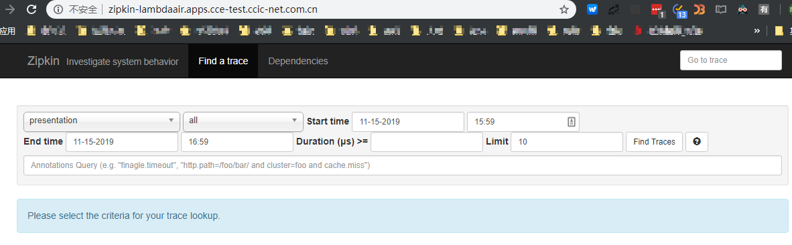
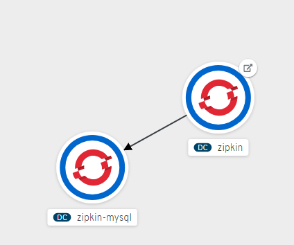
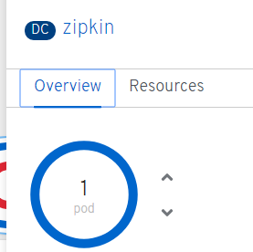

Spring Boot 微服务上容器平台的最佳实践 - 3
在 2019-11-15 Friday 发布于 Java 分类 • 5 min read

前言¶
今天开始第三篇, 主要介绍下 Zipkin + MySQL部署到容器平台上.
项目克隆¶
GitHub 仓库地址 源码在这里. 先下载下来.
$ git clone https://github.com/RHsyseng/spring-boot-msa-ocp.git LambdaAir
然后进入项目目录: cd LambdaAir
几个前提¶
- 共享存储. 这个Demo 应用会用到NFS, K8S(或OpenShift)上得有NFS的PV, 且空间充足(至少5G). 共享存储用于:
- zpikin的mysql数据存储;
- zuul的动态proxy脚本挂载.
- K8S (或OpenShift) 得有充足的权限. 至少得拥有以下权限:
- 创建NameSpace(或OpenShift的Project)
- 创建PVC
- 创建Service
- 创建 Deployment
- 创建 Ingress(或OpenShift的 Route)
- 创建和挂载 ConfigMap
- 创建Secret
创建 NameSpace(或Project)¶
$ oc new-project lambdaair --display-name="Lambda Air" --description="Spring Boot Microservices on Red Hat OpenShift Container Platform"
Now using project "lambdaair" on server "https://ocp-master1.xxx.example.com:8443".
部署ZipKin¶
概述¶
全部步骤拆分如下:
- 创建secret - 存储数据库账号密码等机要信息
- 创建 PVC - zipkin-mysql, 用于申请存储资源, 存放mysql 持久化数据;
- 创建 configmap - zipkin-mysql-cnf, 用于挂载mysql的配置;
- 创建 configmap - zipkin-mysql-initdb, 用于挂载mysql 初始化脚本;
- 创建 deploymentconfig - zipkin-mysql, 用于对zipkin-mysql 的初始化, deployemnt及副本数进行管理.
- 创建 service - zipkin-mysql, 用于在集群内提供 zipkin的mysql 服务. zipkin通过这个service连接到mysql.
- 创建 deploymentconfig - zipkin. 用于对zipkin的build和deployment以及副本数等进行管理;
- 创建 service - zipkin. 用于在集群内提供zipkin 服务;
- 创建 route - zipkin , 用于连接service - zipkin, 使得用户可以通过域名访问zipkin.
创建 MySQL 数据库¶
上面的步骤中, 与创建MySQL 数据库有关的步骤有1-6步. 说明如下:
- 创建账号密码等信息;
- 申请持久化存储;
- 创建MySQL 配置;
- 创建MySQL 初始化脚本;
- 创建MySQL实例. 会用到
- 账号密码
- 持久化存储
- MySQL启动后会执行初始化脚本
- 创建MySQL服务, 供集群内(项目内)使用.
创建 Secret
zipkin-mysql-secret.yml文件如下:
kind: Secret
apiVersion: v1
metadata:
name: zipkin-mysql
namespace: lambdaair
labels:
project: zipkin-mysql
data:
database-password: your-password
database-root-password: root-password
database-user: normaluser
使用oc或kubectl创建:
# 先切换到 lambdaair project(后续都在这个项目里, 不在赘述)
$ oc project lambdaair
# 创建 secret
$ oc create -f zipkin-mysql-secret.yml
# 查看创建结果
$ oc get secret
NAME TYPE DATA AGE
zipkin-mysql Opaque 3 2d5h
创建 PVC
Zipkin使用MySQL数据库进行存储，这反过来又需要创建一个OpenShift 共享存储。假定已经有了:
$ oc get pv
NAME CAPACITY ACCESSMODES RECLAIMPOLICY STATUS CLAIM REASON AGE
zipkin-mysql-data 1Gi RWO Recycle Available 1m
zipkin-mysql-pvc.yml 内容如下:
kind: PersistentVolumeClaim
apiVersion: v1
metadata:
name: zipkin-mysql
namespace: lambdaair
labels:
project: zipkin-mysql
spec:
accessModes:
- ReadWriteOnce
resources:
requests:
storage: 1Gi
创建:
$ oc create -f zipkin-mysql-pvc.yml
$ oc get pvc
NAME STATUS VOLUME CAPACITY ACCESS MODES STORAGECLASS AGE
zipkin-mysql Bound zipkin-mysql-data 1Gi RWO 2d5h
创建 ConfigMap
创建 MySQL 配置的ConfigMap
zipkin-mysql-cnf.yml
kind: ConfigMap
apiVersion: v1
metadata:
name: zipkin-mysql-cnf
namespace: lambdaair
labels:
project: zipkin-mysql
data:
custom.cnf: |
[mysqld]
sql-mode=""
其实就是示范下, 没配置啥. 接下来创建:
$ oc create -f zipkin-mysql-cnf.yml
$ oc get configmap
NAME DATA AGE
zipkin-mysql-cnf 1 2d5h
创建 MySQL 初始化脚本的ConfigMap
zipkin-mysql-initdb.yml
kind: ConfigMap
apiVersion: v1
metadata:
name: zipkin-mysql-initdb
namespace: lambdaair
labels:
project: zipkin-mysql
data:
init.sql: >
CREATE TABLE IF NOT EXISTS zipkin_spans (
`trace_id` BIGINT NOT NULL,
`id` BIGINT NOT NULL,
`name` VARCHAR(255) NOT NULL,
`parent_id` BIGINT,
`debug` BIT(1),
`start_ts` BIGINT COMMENT 'Span.timestamp(): epoch micros used for endTs query and to implement TTL',
`duration` BIGINT COMMENT 'Span.duration(): micros used for minDuration and maxDuration query'
) ENGINE=InnoDB ROW_FORMAT=COMPRESSED;
ALTER TABLE zipkin_spans ADD UNIQUE KEY(`trace_id`, `id`) COMMENT 'ignore
insert on duplicate';
ALTER TABLE zipkin_spans ADD INDEX(`trace_id`, `id`) COMMENT 'for joining
with zipkin_annotations';
ALTER TABLE zipkin_spans ADD INDEX(`trace_id`) COMMENT 'for getTracesByIds';
ALTER TABLE zipkin_spans ADD INDEX(`name`) COMMENT 'for getTraces and
getSpanNames';
ALTER TABLE zipkin_spans ADD INDEX(`start_ts`) COMMENT 'for getTraces
ordering and range';
CREATE TABLE IF NOT EXISTS zipkin_annotations (
`trace_id` BIGINT NOT NULL COMMENT 'coincides with zipkin_spans.trace_id',
`span_id` BIGINT NOT NULL COMMENT 'coincides with zipkin_spans.id',
`a_key` VARCHAR(255) NOT NULL COMMENT 'BinaryAnnotation.key or Annotation.value if type == -1',
`a_value` BLOB COMMENT 'BinaryAnnotation.value(), which must be smaller than 64KB',
`a_type` INT NOT NULL COMMENT 'BinaryAnnotation.type() or -1 if Annotation',
`a_timestamp` BIGINT COMMENT 'Used to implement TTL; Annotation.timestamp or zipkin_spans.timestamp',
`endpoint_ipv4` INT COMMENT 'Null when Binary/Annotation.endpoint is null',
`endpoint_ipv6` BINARY(16) COMMENT 'Null when Binary/Annotation.endpoint is null, or no IPv6 address',
`endpoint_port` SMALLINT COMMENT 'Null when Binary/Annotation.endpoint is null',
`endpoint_service_name` VARCHAR(255) COMMENT 'Null when Binary/Annotation.endpoint is null'
) ENGINE=InnoDB ROW_FORMAT=COMPRESSED;
ALTER TABLE zipkin_annotations ADD UNIQUE KEY(`trace_id`, `span_id`,
`a_key`, `a_timestamp`) COMMENT 'Ignore insert on duplicate';
ALTER TABLE zipkin_annotations ADD INDEX(`trace_id`, `span_id`) COMMENT 'for
joining with zipkin_spans';
ALTER TABLE zipkin_annotations ADD INDEX(`trace_id`) COMMENT 'for
getTraces/ByIds';
ALTER TABLE zipkin_annotations ADD INDEX(`endpoint_service_name`) COMMENT
'for getTraces and getServiceNames';
ALTER TABLE zipkin_annotations ADD INDEX(`a_type`) COMMENT 'for getTraces';
ALTER TABLE zipkin_annotations ADD INDEX(`a_key`) COMMENT 'for getTraces';
CREATE TABLE IF NOT EXISTS zipkin_dependencies (
`day` DATE NOT NULL,
`parent` VARCHAR(255) NOT NULL,
`child` VARCHAR(255) NOT NULL,
`call_count` BIGINT
) ENGINE=InnoDB ROW_FORMAT=COMPRESSED;
ALTER TABLE zipkin_dependencies ADD UNIQUE KEY(`day`, `parent`, `child`);
创建:
$ oc create -f zipkin-mysql-initdb.yml
$ oc get configmap
NAME DATA AGE
zipkin-mysql-cnf 1 2d5h
zipkin-mysql-initdb 1 2d5h
创建 MySQL的 DeploymentConfig
zipkin-mysql-deploymentconfig.yml
备注:
DeploymentConfig这个resource是OpenShift特有的. 基于K8S的ReplicationControllers, 增加了对软件开发和部署生命周期的扩展支持. 最简单的情况,DeploymentConifg就是创建一个新的ReplicationController并启动pod.但是, 它确实增加了一些新功能, 提供了从镜像的现有部署过渡到新镜像的功能, 并且还定义了在创建
ReplicationController之前或之后运行的Hook. (mysql初始化sql就是利用这个功能)还提供以下功能:
- DeploymentConfig，这是用于运行应用程序的模板。
- 触发驱动自动部署以响应事件的触发器(trigger)。
- 用户可定制的部署策略，以从先前版本过渡到新版本。策略在通常称为部署过程的Pod中运行。
- 一组hooks（lifecycle hooks），用于在部署的生命周期中的不同点执行自定义行为。
- 应用程序的版本控制，以便在部署失败的情况下手动或自动支持回滚。
- 手动副本缩放和自动缩放。
kind: DeploymentConfig
apiVersion: apps.openshift.io/v1
metadata:
labels:
project: zipkin-mysql
name: zipkin-mysql
spec:
replicas: 1
selector:
name: zipkin-mysql
strategy:
type: Recreate
recreateParams:
post:
failurePolicy: Abort
execNewPod:
containerName: mysql
command:
- /bin/sh
- -c
- hostname && sleep 10 && /opt/rh/rh-mysql57/root/usr/bin/mysql -h $DATABASE_SERVICE_NAME -u $MYSQL_USER -D $MYSQL_DATABASE -p$MYSQL_PASSWORD -P 3306 < /docker-entrypoint-initdb.d/init.sql && echo Initialized database
env:
- name: DATABASE_SERVICE_NAME
value: zipkin-mysql
volumes:
- mysql-init-script
template:
metadata:
labels:
name: zipkin-mysql
spec:
containers:
- env:
- name: MYSQL_USER
valueFrom:
secretKeyRef:
key: database-user
name: zipkin-mysql
- name: MYSQL_PASSWORD
valueFrom:
secretKeyRef:
key: database-password
name: zipkin-mysql
- name: MYSQL_ROOT_PASSWORD
valueFrom:
secretKeyRef:
key: database-root-password
name: zipkin-mysql
- name: MYSQL_DATABASE
value: ${MYSQL_DATABASE}
image: " "
imagePullPolicy: IfNotPresent
livenessProbe:
initialDelaySeconds: 30
tcpSocket:
port: 3306
timeoutSeconds: 1
name: mysql
ports:
- containerPort: 3306
readinessProbe:
exec:
command:
- /bin/sh
- -i
- -c
- MYSQL_PWD="$MYSQL_PASSWORD" mysql -h 127.0.0.1 -u $MYSQL_USER -D $MYSQL_DATABASE
-e 'SELECT 1'
initialDelaySeconds: 5
timeoutSeconds: 1
resources:
limits:
memory: 512Mi
volumeMounts:
- mountPath: /var/lib/mysql/data
name: zipkin-mysql-data
- mountPath: /docker-entrypoint-initdb.d/
name: mysql-init-script
- mountPath: /etc/mysql/conf.d/
name: mysql-confd
volumes:
- name: zipkin-mysql-data
persistentVolumeClaim:
claimName: zipkin-mysql
- configMap:
name: zipkin-mysql-initdb
name: mysql-init-script
- configMap:
name: zipkin-mysql-cnf
name: mysql-confd
triggers:
- imageChangeParams:
automatic: true
containerNames:
- mysql
from:
kind: ImageStreamTag
name: mysql:5.7
namespace: openshift
type: ImageChange
- type: ConfigChange
这个用到了RedHat提供的mysql:5.7的镜像.
创建:
$ oc create -f zipkin-mysql-deploymentconfig.yml
$ watch oc get pods
Every 2.0s: oc get pods
Fri Jul 21 02:04:15 2017
NAME READY STATUS RESTARTS AGE
zipkin-mysql-1-deploy 1/1 Running 0 2m
zipkin-mysql-1-tv2v1 0/1 ContainerCreating 0 1m
完成部署过程可能需要几分钟，此时应该有1个pod处于Running状态
$ oc get pods
NAME READY STATUS RESTARTS AGE
zipkin-mysql-1-g44s7 1/1 Running 0 4m
创建 MySQL 的 Service
zipkin-mysql-svc.yml:
kind: Service
apiVersion: v1
metadata:
name: zipkin-mysql
namespace: lambdaair
labels:
project: zipkin-mysql
spec:
ports:
- name: mysql
port: 3306
selector:
name: zipkin-mysql
创建并查看:
$ oc create -f zipkin-mysql-svc.yml
$ oc get svc
NAME TYPE CLUSTER-IP EXTERNAL-IP PORT(S) AGE
zipkin-mysql ClusterIP 172.30.241.12 <none> 3306/TCP 2d7h
这样, zipkin就可以通过 service 来调用mysql了.
创建 Zpikin 应用实例并对外提供服务¶
上面的步骤中, 与创建MySQL 数据库有关的步骤有7-9步. 说明如下:
- 创建zipkin实例, 会链接到数据库. 这时候, 集群内外都无法访问该实例, 只能在容器内使用;
- 创建zipkin service, 此时, zipkin可以供集群内使用.
- 创建zipkin route, 连接到zipkin service, 此时, zipkin可以通过域名被用户访问到.
创建 ZipKin的 DeploymentConfig
接下来就是重头戏了! 创建Zipkin的运行实例, 并连接数据库. zpikin-deploymentconfig.yml:
kind: DeploymentConfig
metadata:
labels:
project: zipkin-mysql
name: zipkin
spec:
replicas: 1
selector:
project: zipkin-mysql
template:
metadata:
labels:
project: zipkin-mysql
spec:
containers:
- env:
- name: STORAGE_PORT_9042_TCP_ADDR
value: zipkin-cassandra:9411
- name: STORAGE_PORT_3306_TCP_ADDR
value: zipkin-mysql:3306
- name: MYSQL_USER
value: normaluser
- name: MYSQL_PASS
value: your-password
- name: STORAGE_TYPE
value: mysql
- name: TRANSPORT_TYPE
value: http
- name: KUBERNETES_NAMESPACE
valueFrom:
fieldRef:
fieldPath: metadata.namespace
image: openzipkin/zipkin:1.19.2
name: zipkin
readinessProbe:
httpGet:
path: /api/v1/services
port: 9411
initialDelaySeconds: 5
resources:
limits:
cpu: "3"
memory: "1600Mi"
requests:
cpu: "200m"
memory: "200Mi"
triggers:
- type: ConfigChange
创建并查看进度:
$ oc create -f zpikin-deploymentconfig.yml
$ $ watch oc get pods
Every 2.0s: oc get pods
Fri Jul 21 02:04:15 2017
NAME READY STATUS RESTARTS AGE
zipkin-1-deploy 1/1 Running 0 2m
zipkin-1-sclgl 0/1 Running 0 2m
可能要花费几分钟, 几分钟后再查看, 出于Running状态显示如下:
$ oc get pods
NAME READY STATUS RESTARTS AGE
zipkin-1-k0dv6 1/1 Running 0 5m
这样实例就创建好了.
创建 Zpikin 的 Service
zipkin-svc.yml
apiVersion: v1
kind: Service
metadata:
labels:
project: zipkin-mysql
name: zipkin
spec:
ports:
- port: 80
protocol: TCP
targetPort: 9411
selector:
project: zipkin-mysql
type: LoadBalancer
创建并查看:
$ oc create -f zipkin-svc.yaml
$ oc get svc
NAME TYPE CLUSTER-IP EXTERNAL-IP PORT(S) AGE
zipkin LoadBalancer 172.30.140.146 <pending> 80:32395/TCP 2d7h
容器内的端口是9411, service的对应端口是80. 类型是LoadBalancer. 这里Service就是提供了2个功能:
- 服务注册和发现;
- 负载均衡
创建 Zipkin 的 Route
zpikin-route.yml
apiVersion: route.openshift.io/v1
kind: Route
metadata:
labels:
project: zipkin-mysql
name: zipkin
spec:
port:
targetPort: 9411
to:
kind: Service
name: zipkin
创建并查看:
$ oc create -f zpikin-route.yml
$ oc get route
NAME HOST/PORT PATH SERVICES PORT TERMINATION WILDCARD
zipkin zipkin-lambdaair.apps.cce-test.ccic-net.com.cn zipkin 9411 None
使用显示的URL从浏览器访问控制台，并验证其工作正常: 

小结¶
至此, zipkin + mysql 部署完成. 完成后, 拓扑如下:

mysql容器上只支持单节点. 如果上生产的话建议还是部署在容器外. zipkin的话, 就可以随意的扩展和调整, 点击如下的向上箭头, 加多少个pod都可以, 因为配置了Liveness 和Readiness Probe, K8S会在Readiness Probe探测ok后, 自动将Service的流量LoadBalance到后端的新增和现有的pod. 同时指向service的route实际上也是由后边的多个pod来承载. 更近一步, 可以通过配置HPA来自动根据CPU, 内存等阈值来自动扩缩容量. 这就是K8S的一大优势 -- 一键秒级扩容, 甚至自动扩容! 
